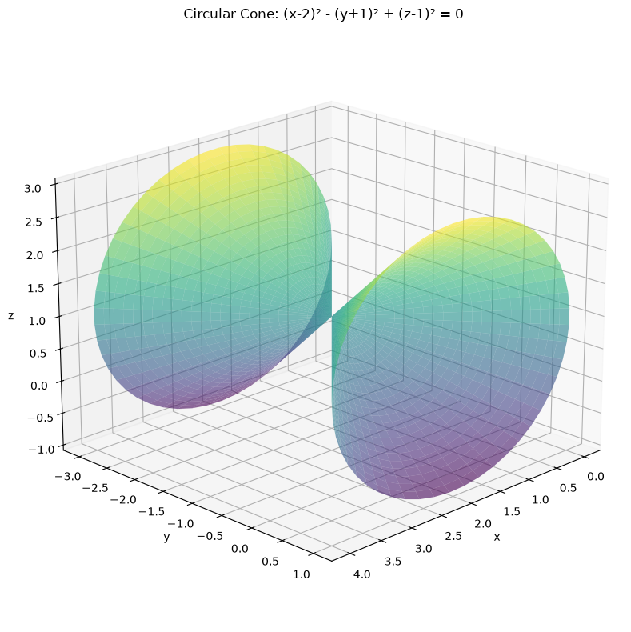
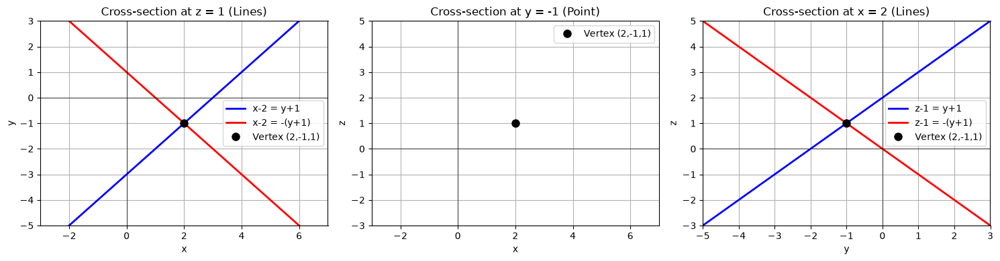
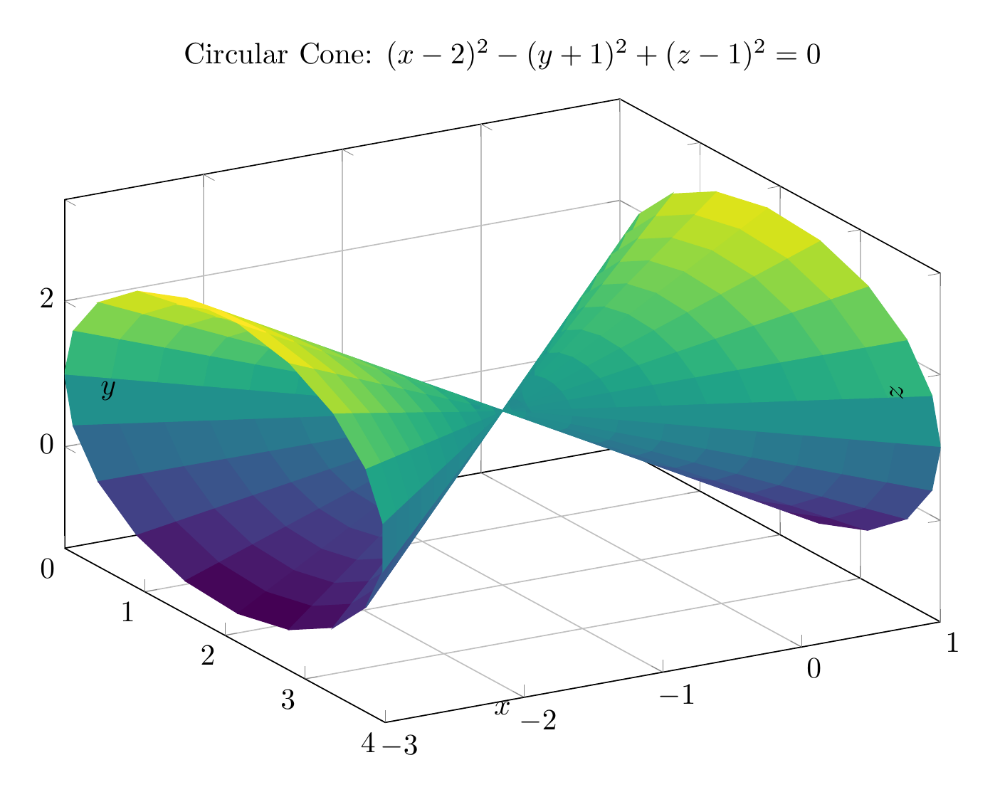
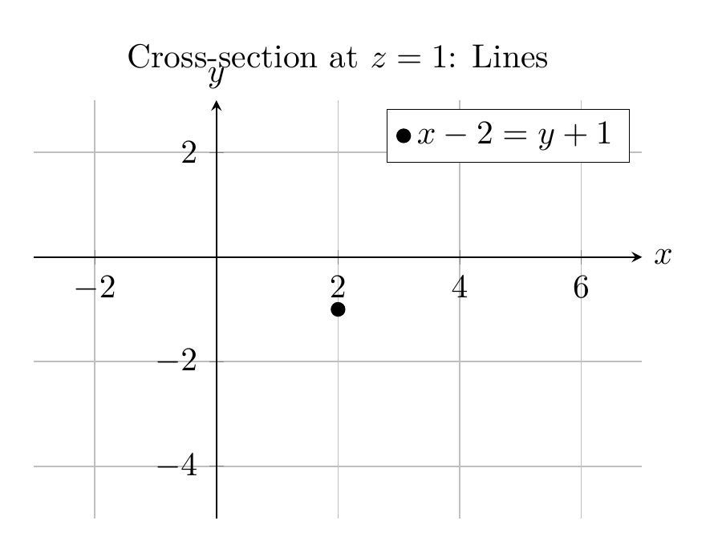

Path: mcma-Qwen3.6-27B/calculus-12.6.35/chat_20260827_014215_812203_utc_0800
Problem
Please solve the math problem in the image.

20260827_014215_812203_utc_0800_0.png
End of problem
Answer
## Solution
### Step 1: Reduce to Standard Form
Given equation:
$$x^2 - y^2 + z^2 - 4x - 2y - 2z + 4 = 0$$
**Group terms by variable:**
$$(x^2 - 4x) - (y^2 + 2y) + (z^2 - 2z) + 4 = 0$$
**Complete the square for each variable:**
- For $x$: $x^2 - 4x = (x-2)^2 - 4$
- For $y$: $-(y^2 + 2y) = -[(y+1)^2 - 1] = -(y+1)^2 + 1$
- For $z$: $z^2 - 2z = (z-1)^2 - 1$
**Substitute back:**
$$[(x-2)^2 - 4] - [(y+1)^2 - 1] + [(z-1)^2 - 1] + 4 = 0$$
**Simplify:**
$$(x-2)^2 - (y+1)^2 + (z-1)^2 - 4 + 1 - 1 + 4 = 0$$
$$\boxed{(x-2)^2 - (y+1)^2 + (z-1)^2 = 0}$$
### Step 2: Classify the Surface
The standard form is:
$$\frac{(x-2)^2}{1^2} + \frac{(z-1)^2}{1^2} - \frac{(y+1)^2}{1^2} = 0$$
This is a **circular cone** (a special case of an elliptic cone where the semi-axes are equal).
**Key properties:**
- **Vertex:** $(2, -1, 1)$
- **Axis:** Parallel to the $y$-axis
- **Cross-sections perpendicular to $y$-axis:** Circles with radius $|y+1|$
- **Cross-sections perpendicular to $x$ or $z$ axes:** Hyperbolas (or intersecting lines at the vertex)
### Summary
The equation represents a **circular cone** with vertex at $(2, -1, 1)$ opening along the $y$-axis.
$\boxed{(x-2)^2 - (y+1)^2 + (z-1)^2 = 0, \text{ Circular Cone}}$
---


\documentclass[border=10pt]{standalone}
\usepackage{pgfplots}
\usepgfplotslibrary{colormaps}
\pgfplotsset{compat=1.18}
\begin{document}
\begin{tikzpicture}
\begin{axis}[
view={60}{30},
xlabel={$x$},
ylabel={$y$},
zlabel={$z$},
title={Circular Cone: $(x-2)^2 - (y+1)^2 + (z-1)^2 = 0$},
colormap/viridis,
grid=major,
width=12cm,
height=9cm,
xlabel style={at={(axis description cs:0.5,0.05)}, anchor=north},
ylabel style={at={(axis description cs:0.05,0.5)}, anchor=south},
zlabel style={at={(axis description cs:0.95,0.5)}, anchor=west},
]
% Plot the cone surface using parametric plot
\addplot3[
surf,
shader=flat corner,
samples=20,
samples y=20,
domain=0:360,
y domain=-2:2,
] (
{2 + y*cos(x)},
{y - 1},
{1 + y*sin(x)}
);
\end{axis}
\end{tikzpicture}
\end{document}

\documentclass[border=10pt]{standalone}
\usepackage{pgfplots}
\pgfplotsset{compat=1.18}
\begin{document}
\begin{tikzpicture}
\begin{axis}[
xlabel={$x$},
ylabel={$y$},
title={Cross-section at $z=1$: Lines},
grid=major,
width=8cm,
height=6cm,
axis lines=middle,
xmin=-3, xmax=7,
ymin=-5, ymax=3,
xlabel style={at={(current axis.right of origin)}, anchor=west},
ylabel style={at={(current axis.above origin)}, anchor=south},
]
% Plot the lines x-2 = y+1 and x-2 = -(y+1)
\addplot[blue, thick, domain=-5:3] ({y+3}, {y});
\addplot[red, thick, domain=-5:3] ({1-y}, {y});
% Plot the vertex
\addplot[black, mark=*, only marks] coordinates {(2, -1)};
% Add legend
\legend{$x-2 = y+1$, $x-2 = -(y+1)$, Vertex (2,-1,1)}
\end{axis}
\end{tikzpicture}
\end{document}

End of answer